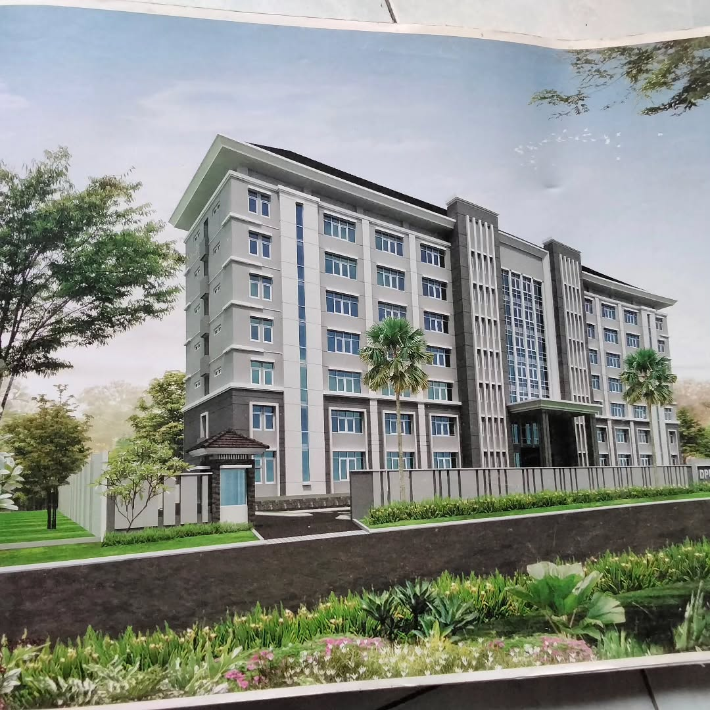
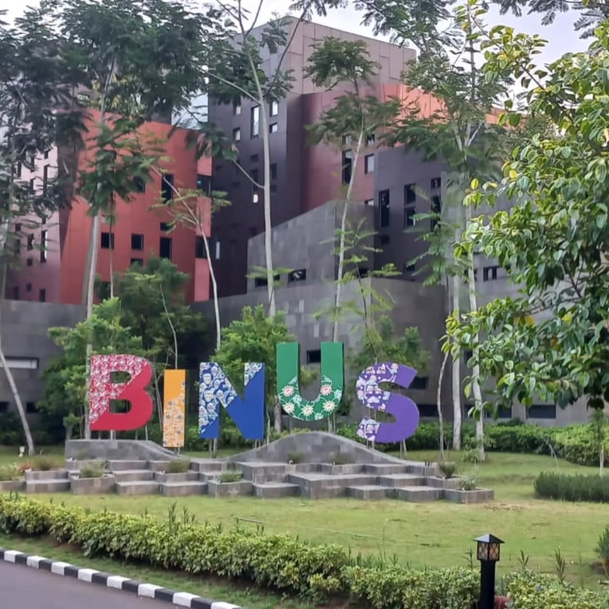
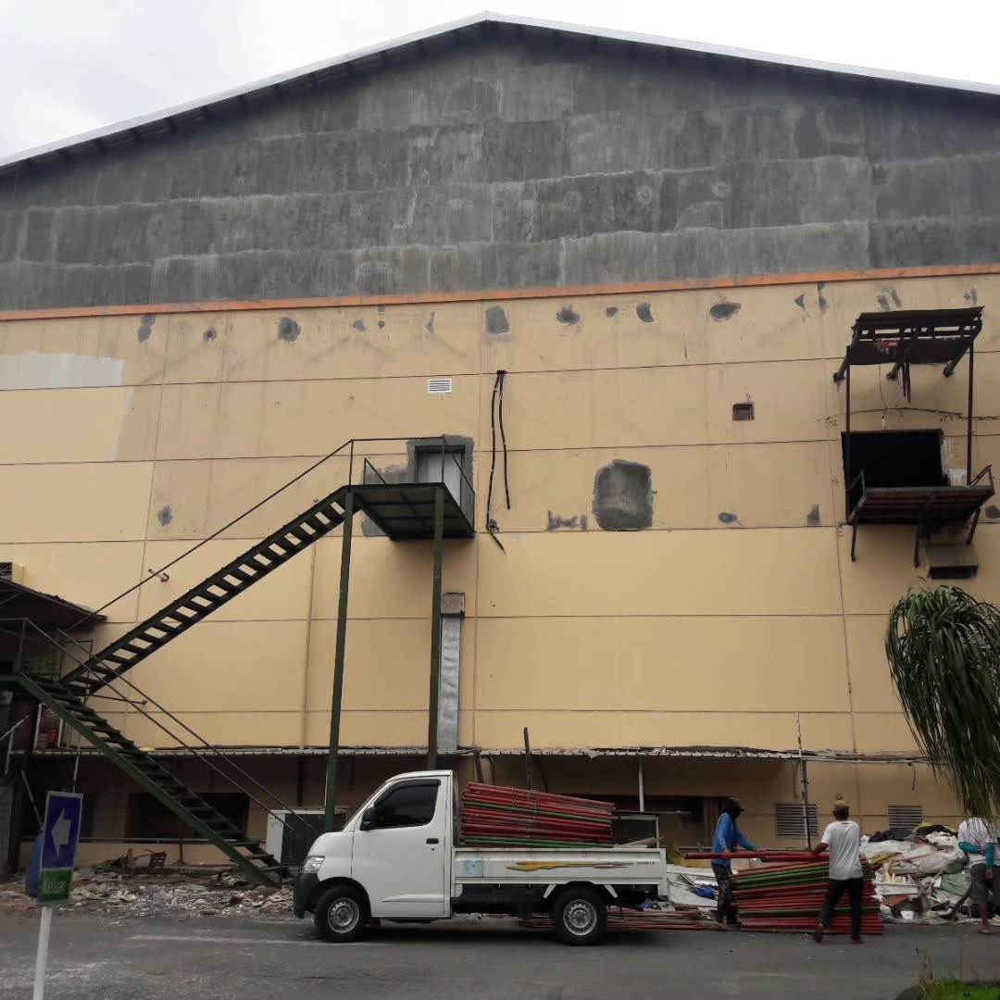
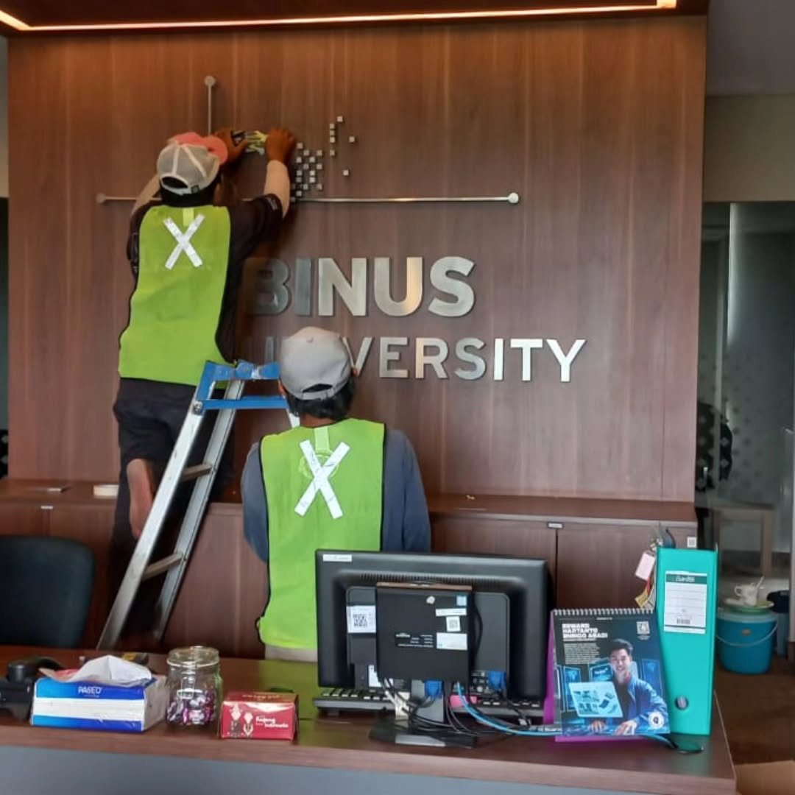

ARSITEKTURPilihan proyek
Pekerjaan dengan ruang lingkup jelas
Lihat ragam pekerjaan arsitektur, renovasi, konstruksi, dan interior yang ditangani IKONIK.
 INTERIOR & OFFICE
INTERIOR & OFFICE
ARSITEKTUR
KONSTRUKSI
INTERIOR & CUSTOMPunya kebutuhan serupa?